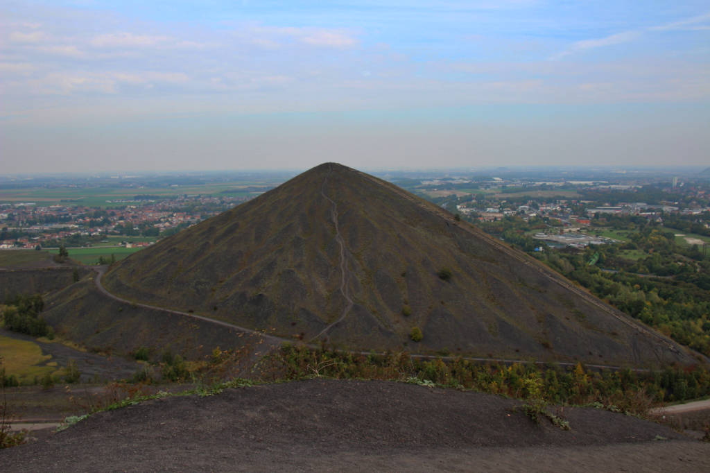
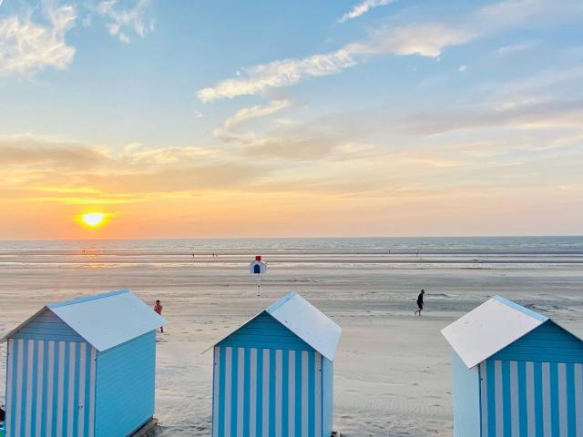
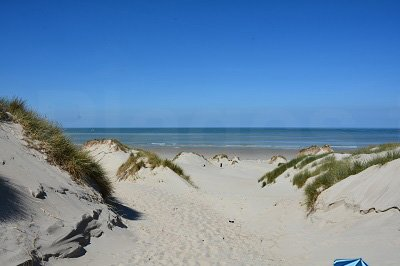

En effet, La Nature est toute à son avantage. Elle permet d'explorer des paysages magnifiques et de se sentir agréable ou bien même relaxant dedans dont :
1. Les terrils

Les terrils, c'est des montagnes faites de restes de mines, dans le Nord de la France.
À la base, c'étaient des tas de déchets, mais maintenant, c'est devenu un symbole de la région. Maintenant, les terrils sont devenus des endroits pour se balader,
faire du sport ou profiter de paysage en hauteur. En plus, la nature a repris le dessus, ce qui augmente sa beauté.
En effet, les terrils sont des symboles dans notre région, il y a plus de 200 terrils dans les Hauts-de-France ce qui fait cette région
si emblématique vis-à-vis de cela. De plus, dans cette Région, un des terrils est l'un des plus hauts d'Europe
se situe à Loos-en-Gohelle ( près de Lens ) avec une hauteur de 186m au-dessus du niveau de la mer.
2. La plage de Dunkerque

Les plages de Dunkerque, est un des endroits les plus calmes du Nord. Avec l'énorme vue étendue de sable,
c'est parfait pour se reposer et s'amuser seul ou avec des amis. Les plages possèdent un charme grâce au coucher de soleil.
De plus, il est tout aussi agréable de se promener sur la digue. En effet l'une d'elles
est très large et très longue qui s'étend sur 4 km donc de quoi se promener et profiter. Ce site touristique est adapté à tous que cela soit les plus jeunes comme
les plus âgées.
3. Les Dunes

Les dunes de Saint-Quentin-en-Tourmont sont un lieu atypique de la Nature ! Avec ses plages avec la mer en littoral,
le sentier de 7.2 km avec une tranquillité absolue. En effet, ses dunes arbustives sont remplis de trésors de la Nature.
Mais également, ses dunes sont en relation avec les Baies de Somme
qui est également un autre site Touristique des Hauts-de-France.